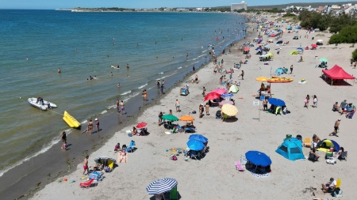

Paquetes Locales
Conoce cada uno de nuestros paquetes turisticos.
-
Bariloche

BARILOCHE: TOUR A LOS 7 LAGOS Y SAN MARTÍN DE LOS ANDES
Ver Detalle -
Mendoza

MENDOZA: TOUR Y DESTINOS A LA RUTA DEL VINO
Ver Detalle -
Puerto Madryn

PUERTO MADRYN: BUCEO & SNORKELLING - AREAS NATURALES PROTEGIDAS
Ver Detalle
Bariloche: tour a los 7 lagos y San Martín de los Andes
Disfruta de un tour de 10h por la carretera de los Siete Lagos en un viaje panorámico por carretera en el tramo de la Ruta Nacional 40 que une San Martín de los Andes y Villa La Angostura. Déjate llevar por la belleza de los paisajes naturales de la zona.
Bariloche: cerro Tronador
Dirígete hacia la cordillera de los Andes por la ruta 40. Rodea las orillas de los lagos Gutiérrez y
Mascardi y llega por un camino de ripio a la base del Tronador.
Bariloche: pases de esquí y equipamiento Cerro Catedral
Prepárate para pasar 1-7 estupendos días en el impresionante cerro Catedral. Participa en una
aventura de esquí o de snowboard. Saca el máximo partido a tu tour reservando el alquiler de
material y los forfaits para los telesillas.
Isla Victoria y bosque de los Arrayanes
Navega por las aguas azulas del lago Nahuel Huapi en el moderno y cómodo catamarán Cau Cau y
descubre el paisaje de la isla Victoria y del bosque de los Arrayanes.
Mendoza: la ruta del vino
Disfruta de un tour de 10h por la carretera de los Siete Lagos en un viaje panorámico por carretera en el tramo de la Ruta Nacional 40 que une San Martín de los Andes y Villa La Angostura. Déjate llevar por la belleza de los paisajes naturales de la zona.
Bariloche: cerro Tronador
Dirígete hacia la cordillera de los Andes por la ruta 40. Rodea las orillas de los lagos Gutiérrez y
Mascardi y llega por un camino de ripio a la base del Tronador.
Bariloche: pases de esquí y equipamiento Cerro Catedral
Prepárate para pasar 1-7 estupendos días en el impresionante cerro Catedral. Participa en una
aventura de esquí o de snowboard. Saca el máximo partido a tu tour reservando el alquiler de
material y los forfaits para los telesillas.
Isla Victoria y bosque de los Arrayanes
Navega por las aguas azulas del lago Nahuel Huapi en el moderno y cómodo catamarán Cau Cau y
descubre el paisaje de la isla Victoria y del bosque de los Arrayanes.
PUERTO MADRYN: BUCEO & SNORKELLING - AREAS NATURALES PROTEGIDAS
Buceo & Snorkelling Basta con sumergirse en las aguas cristalinas del Golfo Nuevo para entender por qué esta ciudad es la meca del buceo en la Argentina. (Areas Naturales Protegidas = ANP)
ANP Punta Tombo
Caminar entre pingüinos, convierte a Punta Tombo en la excursión más elegida por los amantes de la naturaleza. Contratá a algunas de las agencias habilitadas para poder disfrutar al máximo la experiencia.
ANP Península Valdés
Un lugar en el mundo privilegiado por la naturaleza, declarado por la UNESCO Patrimonio Natural de la Humanidad, en 1999. Contratá a algunas de las agencias habilitadas para poder disfrutar al máximo la experiencia.
ANP El Doradillo
Un lugar único con una vista privilegiada, donde se pueden avistar las ballenas desde junio a octubre a muy pocos metros de la costa, siendo Las Canteras la playa ideal estando ubicada a 19 km de la ciudad. Contratá a una agencia habilitada para poder disfrutar al máximo de la experiencia.

Tarifas y paquetes
-
3 noches
USD 300
Para 2 personas
Todo inlcuido
Hotel 4 estrellas
Adquirir paquete -
5 noches
USD 450
Para 2 personas
Todo inlcuido
Hotel 4 estrellas
Adquirir paquete -
7 noches
USD 650
Para 2 personas
Todo inlcuido
Hotel 5 estrellas
Adquirir paquete